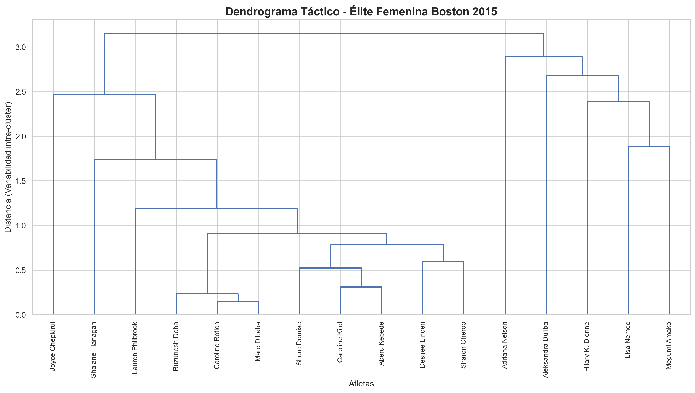
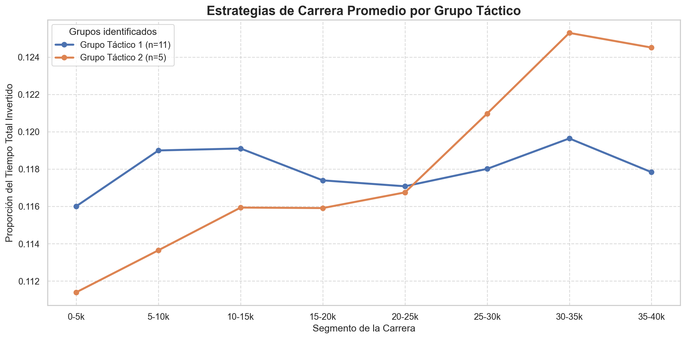

En este capítulo se realizarán diversos estudios de Aprendizaje no Supervisado. Dada la naturaleza de los datos, se seguirán los siguientes enfoques:
Clustering No Jerárquico para descubrir las estrategias de carrera
Clustering Jerárquico para agrupar a corredores similares en cuanto a sus resultados en las 3 maratones
Clustering en streaming para seguir a los atletas de élite a través de cada parcial
3.1 Importación de librerías
Para comenzar, cargamos el ecosistema necesario:
Ver código
import pandas as pdimport numpy as np# El algoritmo para pacingfrom sklearn.cluster import KMeans# Las métricas para decidir si la 'k' es buenafrom sklearn.metrics import silhouette_score# Herramienta para escalar datosfrom sklearn.preprocessing import StandardScaler# Herramientas para hacer el jerárquicofrom scipy.cluster.hierarchy import dendrogram, linkage, fcluster# Herramientas para los mapas auto-organizadosimport matplotlib.pyplot as pltimport seaborn as snssns.set_theme(style="whitegrid")plt.rcParams['figure.figsize'] = (12, 6)plt.rcParams['font.size'] =11
3.2 Carga de datos
Cargamos los datos resultantes tras haber hecho el análisis exploratorio de datos en la anterior sección.
Ver código
# Si no os deja cargarlo al trabajar (no al hacer quarto render), en la consola importar os y dejais como directorio de trabajo la carpeta de notebooks# import os# os.getcwd (y si no está en notebook, poneis en la consola os.chdir("notebooks"))df_boston = pd.read_parquet("../data/processed/boston_post_eda.parquet")
3.3 Clustering No Jerárquico: Identificación de Estrategias de Carrera (Pacing)
El objetivo de esta sección es descubrir y categorizar de forma automática las diferentes estrategias de ritmo (pacing strategies) empleadas por los corredores durante la maratón. Para ello, utilizaremos técnicas de aprendizaje no supervisado, buscando agrupar a los atletas según la distribución de su esfuerzo a lo largo de los 42,195 km, independientemente de su marca final absoluta.
3.3.1 Fundamento Teórico: El Algoritmo K-Means
Para llevar a cabo esta agrupación, implementaremos el algoritmo K-Means (K-Medias), uno de los métodos de clustering particional más robustos y utilizados.
A diferencia del clustering jerárquico, K-Means requiere que se defina a priori el número de grupos (\(k\)) que se desean encontrar. El algoritmo funciona de manera iterativa siguiendo este proceso:
Inicialización: Se seleccionan aleatoriamente \(k\) puntos en el espacio de características que actuarán como los centros iniciales de los grupos (centroides, \(\mu_i\)).
Asignación: Se calcula la distancia euclidiana entre cada corredor y todos los centroides. Cada corredor se asigna al clúster cuyo centroide esté más cercano.
Actualización: Una vez asignados todos los puntos, se recalcula la posición de cada centroide moviéndolo a la media matemática de todos los corredores que pertenecen a ese grupo.
Convergencia: Los pasos 2 y 3 se repiten de forma iterativa hasta que los centroides dejan de moverse o se alcanza un número máximo de iteraciones.
Matemáticamente, K-Means busca minimizar la varianza intra-clúster, conocida como Inercia (\(J\)), que se define como la suma de las distancias al cuadrado de cada punto respecto a su centroide:
Donde \(k\) es el número de clústeres, \(C_i\) es el conjunto de puntos que pertenecen al clúster \(i\), \(x\) es el punto de datos (la estrategia del corredor) y \(\mu_i\) es el centroide del clúster.
3.3.2 Metodología de Ejecución y Análisis
Para que el algoritmo capture estrategias puras y no se sesgue por la velocidad absoluta del corredor, se debe seguir un riguroso proceso de ingeniería de características (Feature Engineering) y análisis posterior:
3.3.2.1 1. Transformación de los Tiempos (Normalización de Ritmos)
Los tiempos del dataset original son acumulativos. Para capturar el esfuerzo en cada tramo, se debe transformar la variable de paso calculando el tiempo neto de cada segmento (ej. \(T_{10k} - T_{5k}\) para obtener el tiempo invertido exclusivamente entre el kilómetro 5 y el 10). Una vez calculados los tiempos netos por tramo, estos se deben dividir entre el tiempo final oficial (official_time). De este modo, cada variable representará el porcentaje del tiempo total que el atleta invirtió en ese parcial concreto.
3.3.2.2 2. Determinación del Número Óptimo de Clústeres (\(k\))
Se iterará el algoritmo K-Means para distintos valores de \(k\) (por ejemplo, del 2 al 10). Para seleccionar el \(k\) óptimo que mejor defina las tipologías de corredores, se apoyará la decisión en dos métricas gráficas: * El Método del Codo (Elbow Method): Analizando la curva de caída de la Inercia. * El Análisis de la Silueta (Silhouette Score): Para medir la cohesión y separación real de los grupos formados.
3.3.2.3 3. Perfilado y Visualización de Estrategias
Una vez elegida la \(k\) óptima y asignados los grupos, se extraerán las coordenadas de los centroides finales. Se graficarán estos centroides en un gráfico de líneas superpuestas (Eje X: Segmento de carrera; Eje Y: Porcentaje de tiempo invertido). Esto permitirá nombrar a cada cluster.
3.3.2.4 4. Conclusiones y Cruce de Variables
Finalmente, se extraerá el valor de negocio de la agrupación realizando un análisis cruzado (Cross-tabulation). Se evaluará, por ejemplo, la relación entre cada cluster y la variable hit_the_wall o el porcentaje de atletas (sobre el total de ese grupo) que hay en cada clúster
3.4 Clustering Jerárquico: Análisis Táctico de la Élite Femenina (2015)
Mientras que el algoritmo K-Means nos permitió identificar macrotendencias de ritmo en la población general de corredores, el Clustering Jerárquico es la herramienta ideal para diseccionar grupos pequeños y específicos. En esta sección, abandonaremos el enfoque masivo para centrarnos en un ecosistema altamente competitivo: la categoría de Élite Femenina en la edición de 2015.
El algoritmo jerárquico aglomerativo asume inicialmente que cada observación (cada corredor) es un clúster independiente. A partir de ahí, el proceso iterativo es el siguiente:
Cálculo de la Matriz de Distancias: Se calcula la distancia entre todos los pares de clústeres existentes. La métrica más utilizada es la Distancia Euclidiana en un espacio de \(n\) dimensiones: \[d(x, y) = \sqrt{\sum_{i=1}^{n} (x_i - y_i)^2}\]
Fusión: Se identifican los dos clústeres separados por la menor distancia y se unen para formar un nuevo clúster consolidado.
Actualización: Se recalcula la matriz de distancias para medir la lejanía entre el nuevo clúster formado y los clústeres restantes.
Iteración: Los pasos 2 y 3 se repiten hasta que todas las observaciones quedan englobadas en un único macro-clúster central.
3.4.1.1 Criterios de Enlace (Linkage Criteria)
El punto más crítico del algoritmo en el paso 3 es definir cómo se mide la distancia matemática entre dos grupos que contienen múltiples puntos. Para ello, existen diversos criterios de enlace. En nuestro análisis deportivo, evaluaremos principalmente:
Enlace Simple (Single Linkage): Calcula la distancia entre los dos puntos más cercanos de cada clúster. Tiende a generar grupos alargados en forma de cadena.
Enlace Completo (Complete Linkage): Calcula la distancia entre los dos puntos más alejados, favoreciendo la creación de grupos esféricos y compactos.
3.4.1.2 Representación Visual y Corte: El Dendrograma
El resultado de este proceso no es una simple asignación de etiquetas, sino una estructura de árbol denominada Dendrograma. En este gráfico, el eje vertical (altura) representa la distancia matemática a la que se han fusionado dos grupos.
3.4.2 Análisis Táctico
Para este estudio, aplicaremos esta técnica con el fin de identificar perfiles de consistencia temporal; es decir, agruparemos a los corredores basándonos en cómo ha evolucionado su rendimiento a lo largo de las ediciones de 2015, 2016 y 2017.
Ver código
# 1. Filtramos: Nos quedamos con la edición 2015, mujeres y categoría Élite# Convertimos Date a datetime para extraer el año de forma segurafiltro_2015 = pd.to_datetime(df_boston['Date']).dt.year ==2015df_elite_f_2015 = df_boston[filtro_2015 & (df_boston['gender'] =='F') & (df_boston['athlete_level'] =='Élite')].copy()print(f"Total de corredoras en la Élite Femenina de 2015: {len(df_elite_f_2015)}")# 2. Calculamos los tiempos netos de cada tramo (segmentos de 5km + sprint final)df_elite_f_2015['net_0_5k'] = df_elite_f_2015['5k']df_elite_f_2015['net_5_10k'] = df_elite_f_2015['10k'] - df_elite_f_2015['5k']df_elite_f_2015['net_10_15k'] = df_elite_f_2015['15k'] - df_elite_f_2015['10k']df_elite_f_2015['net_15_20k'] = df_elite_f_2015['20k'] - df_elite_f_2015['15k']df_elite_f_2015['net_20_25k'] = df_elite_f_2015['25k'] - df_elite_f_2015['20k']df_elite_f_2015['net_25_30k'] = df_elite_f_2015['30k'] - df_elite_f_2015['25k']df_elite_f_2015['net_30_35k'] = df_elite_f_2015['35k'] - df_elite_f_2015['30k']df_elite_f_2015['net_35_40k'] = df_elite_f_2015['40k'] - df_elite_f_2015['35k']# 3. Normalizamos: Convertimos los netos a porcentajes del tiempo totalcolumnas_netas = ['net_0_5k', 'net_5_10k', 'net_10_15k', 'net_15_20k', 'net_20_25k', 'net_25_30k', 'net_30_35k', 'net_35_40k']variables_clustering = []for col in columnas_netas: nuevo_nombre =f"pct_{col}" df_elite_f_2015[nuevo_nombre] = df_elite_f_2015[col] / df_elite_f_2015['official_time'] variables_clustering.append(nuevo_nombre)# 4. Establecemos el nombre de la corredora como índice# Esto es CRUCIAL para que SciPy ponga sus nombres reales al final del dendrogramadf_elite_f_2015.set_index('display_name', inplace=True)# 5. Creamos el sub-dataframe definitivo (X) solo con las variables a agruparX_jerarquico = df_elite_f_2015[variables_clustering]# Vista previa de las primeras 3 corredorasprint("\nMatriz de características tácticas (porcentajes) lista para SciPy:\n")print(X_jerarquico.head(3).to_markdown())
Una vez tenemos las variables, vamos a realizar y graficar el clustering jerárquico.
Comenzamos calculando el clustering jerárquico utilizando un enlace simple:
Ver código
# 1. Estandarizamos los datos para que todos los tramos de 5km pesen lo mismoscaler = StandardScaler()X_scaled = scaler.fit_transform(X_jerarquico)# 2. Calculamos la matriz de enlaces (Clustering Jerárquico)# La variable 'Z' contendrá toda la historia de cómo se han ido uniendo las corredorasZ = linkage(X_scaled, method='single')plt.figure(figsize=(14, 8))plt.title("Dendrograma Táctico - Élite Femenina Boston 2015", fontsize=16, fontweight='bold')plt.ylabel("Distancia (Variabilidad intra-clúster)", fontsize=12)plt.xlabel("Atletas", fontsize=12)# Dibujamos el dendrograma completodendro = dendrogram( Z, labels=X_jerarquico.index, leaf_rotation=90, leaf_font_size=10, color_threshold=0# Lo ponemos a 0 para que de momento salga todo de un color hasta que decidamos el corte)plt.tight_layout()plt.show()

Tras visualizar el dendrograma, observamos que se pueden sacar 2 grupos distintos. Los dividimos y vemos sus centroides para ver las estrategias
Ver código
# 1. DEFINIR EL CORTE: Ajusta este valor numérico mirando el eje Y del dendrograma anterioraltura_corte =3.0# 2. Extraemos las etiquetas de los gruposdf_elite_f_2015['cluster_tactico'] = fcluster(Z, t=altura_corte, criterion='distance')print("Distribución de atletas por grupo táctico: \n")print(df_elite_f_2015['cluster_tactico'].value_counts().sort_index().to_markdown())# 3. Calculamos las estrategias promedio (centroides)centroides_jerarquico = df_elite_f_2015.groupby('cluster_tactico')[variables_clustering].mean()# 4. Graficamos las líneas de ritmo de cada grupoplt.figure(figsize=(12, 6))# Limpiamos los nombres del Eje X para la leyendaetiquetas_x = [col.replace('pct_net_', '').replace('_', '-') for col in variables_clustering]for cluster_id in centroides_jerarquico.index: plt.plot( etiquetas_x, centroides_jerarquico.loc[cluster_id], marker='o', linewidth=2.5, label=f'Grupo Táctico {cluster_id} (n={len(df_elite_f_2015[df_elite_f_2015["cluster_tactico"] == cluster_id])})' )plt.title("Estrategias de Carrera Promedio por Grupo Táctico", fontsize=16, fontweight='bold')plt.xlabel("Segmento de la Carrera", fontsize=12)plt.ylabel("Proporción del Tiempo Total Invertido", fontsize=12)plt.legend(title="Grupos identificados")plt.grid(True, linestyle='--', alpha=0.7)plt.tight_layout()plt.show()
Distribución de atletas por grupo táctico:
| cluster_tactico | count |
|------------------:|--------:|
| 1 | 11 |
| 2 | 5 |

Podemos observar que el cluster 1 contiene 11 corredoras y es una estrategia mucho más constante que la del cluster 2, en la que es totalmente incremental.
El clustering jerárquico nos ha revelado la existencia de dos estrategias de carrera, pero… ¿cuál de ellas fue la más efectiva?
Para descubrirlo, cruzaremos las etiquetas de los grupos tácticos obtenidos con la posición final real de las atletas en su categoría (division_result). Calcularemos la posición media de cada pelotón e identificaremos en qué grupo se encontraba la ganadora absoluta de la prueba.
Ver código
# 1. Agrupamos por clúster táctico y calculamos métricas sobre la posiciónresumen_posiciones = df_elite_f_2015.groupby('cluster_tactico').agg( Num_Atletas=('division_result', 'count'), Posicion_Media=('division_result', 'mean'), Mejor_Posicion=('division_result', 'min')).reset_index()# 2. Añadimos una columna visual para identificar rápidamente dónde está la ganadoraresumen_posiciones['Ganadora_en_grupo'] = resumen_posiciones['Mejor_Posicion'].apply(lambda x: 'Sí 🏆'if x ==1.0else'No')# 3. Redondeamos los decimales para que la tabla quede limpiaresumen_posiciones = resumen_posiciones.round({'Posicion_Media': 1})# 4. Renombramos columnas para la presentaciónresumen_posiciones.rename(columns={'cluster_tactico': 'Grupo Táctico','Num_Atletas': 'Nº Atletas','Posicion_Media': 'Posición Final Media','Mejor_Posicion': 'Mejor Posición del Grupo','Ganadora_en_grupo': '¿Contiene a la Ganadora?'}, inplace=True)# 5. Imprimimos la tabla en formato Markdownprint("\n") # Salto de línea por seguridad para Pandocprint(resumen_posiciones.to_markdown(index=False))print("\n")
Grupo Táctico
Nº Atletas
Posición Final Media
Mejor Posición del Grupo
¿Contiene a la Ganadora?
1
11
6.5
1
Sí 🏆
2
5
13
11
No
Por lo tanto observamos que la estrategia constante (Cluster 1) es la mejor estrategia en cuanto a resultados obtenidos.
3.5 Clustering en Streaming: Simulación de Carrera en Vivo
La idea es cogerse a los atletas de élite femeninos y hacer un clustering en streaming al paso de cada parcial para ver cómo se hacen o deshacen los grupos de carrera.